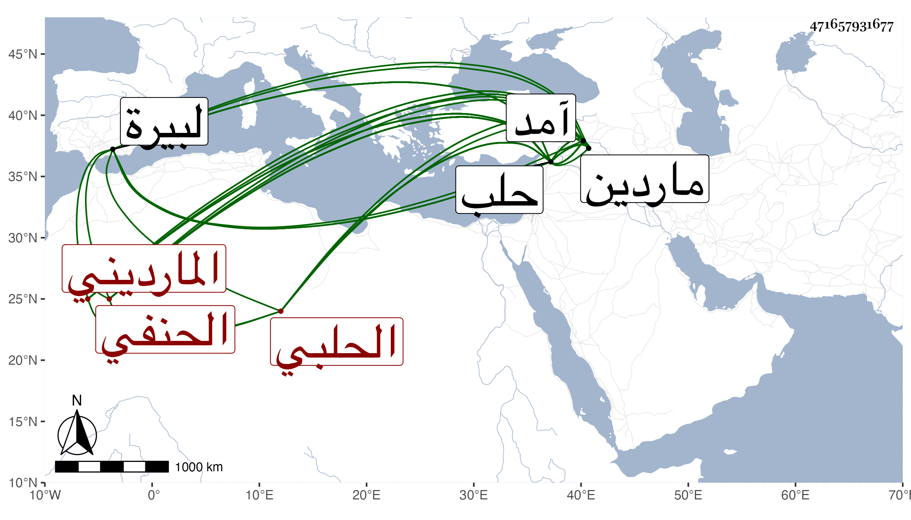

0902Sakhawi.DawLamic.ITO20230111-ara1.EIS1600.471657931677
Biography ID: 471657931677
457
محمد بن أبي بكر بن محمد بن عثمان بن أحمد بن عمر بن سلامة البدر المارديني ثم الحلبي الحنفي عالم حلب واخو حسن الماضي ، ويختصر من نسبه فيقال ابن أبي بكر بن سلامة ومرة ابن أبي بكر بن محمد بن سلامة . ولد في سنة ثمان وخمسين وسبعمائة . وقال شيخنا إنه أخبره أنه في سنة خمس وخمسين . ونشا ببلاده وكان أبوه فيما أخبر عالما مفننا يتكسب من عمل يده في التجارة فحفظ ابنه عدة مختصرات ولقي أكابر فأخذ عنهم كسريجا والحسام بن شرف التبريزي وأحمد الجندي وآخرين فقد قرأت بخطه : وشيوخي كثيرون ، إلى أن مهر وظهرت فضائله بحيث شغل الطلبة ثم تنافر مع قاضي ماردين الصدر أبي الطاهر السمرقندي بعد صحبته معه فارتحل قبل الفتنة التمرية إلى حلب واختص بأبي الوليد بن الشحنة ولازمه حتى أخذ عنه جانبا من الكشاف وغيره ثم رجع إلى بلاده وتكرر قدومه لحلب إلى أن قطنها من سنة عشر وثمانمائة وتنزل في عدة مدارس بل درس بالجاولية وبها كان سكنه وبالحدادية ، وتصدى للإقراء فانتفع به الفضلاء ، وكان كما قاله ابن خطيب الناصرية فقيها فاضلا مستحضرا لمحفوظاته في العلوم لكنه كان يكثر الوقيعة في الناس واغتيابهم وربما يمقت لأجل ذلك . وقال غيره إنه كان إماما عالما علامة أديبا بارعا مفننا حامل لواء مذهب الحنفية بحلب من غير منازع مع القدم الراسخ في بقية العلوم والنظم الرائق والنثر الفائق والقدرة الزائدة على التعبير عما في نفسه ، وقد أعطى شيخنا بعض تصانيفه ليقرظها له عند حلوله بحلب فعاجله التوجه إلى آمد فأرسل إليه بقصيدة وافق وصولها له يوم رحيله من البيرة إلى حلب وأجابه عنها حسبما أثبتهما في الجواهر . وذكره في إنبائه وقال أنه لما غلب قرايلك على ماردين نقله إلى آمد فأقام بها مدة ثم أفرج عنه فرجع إلى حلب قال وحصل له فالج قبل موته بنحو عشر سنين فانقطع ثم خف عنه لكنه صار ثقيل الحركة قال وكان حسن النظم والمذاكرة فقيها فاضلا صاحب فنون من العربية والمعاني والبيان وقد مدحني بقصيدة رائية وأجبته عنها . ومات بعدنا في صفر زاد غيره بعد عصره يوم الاثنين سادس عشريه سنة سبع وثلاثين وله اثنتان وثمانون سنة ولم يخلف بعده بحلب مثله وقد ذكرت له ترجمة حسنة معجمي . قلت ما وقفت عليه فيه نعم رأيته علق عنه في فوائد رحلته من فوائده شيئا وافتتحه بقوله : أفادني فلان .
